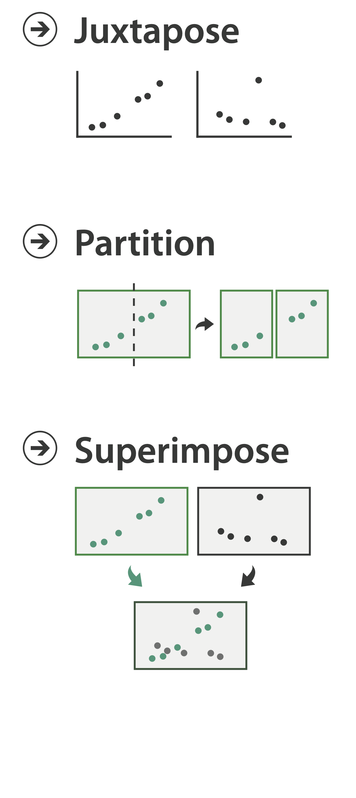
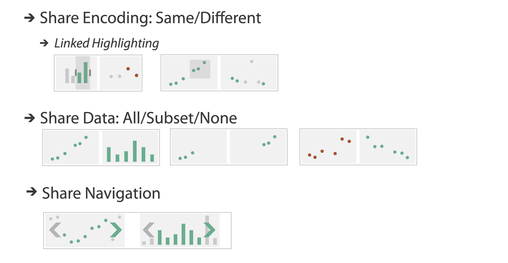
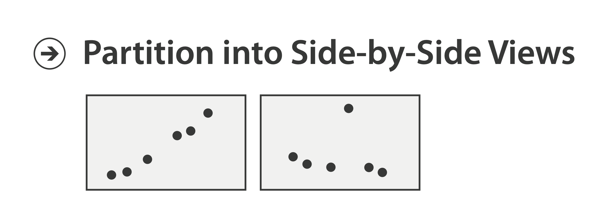
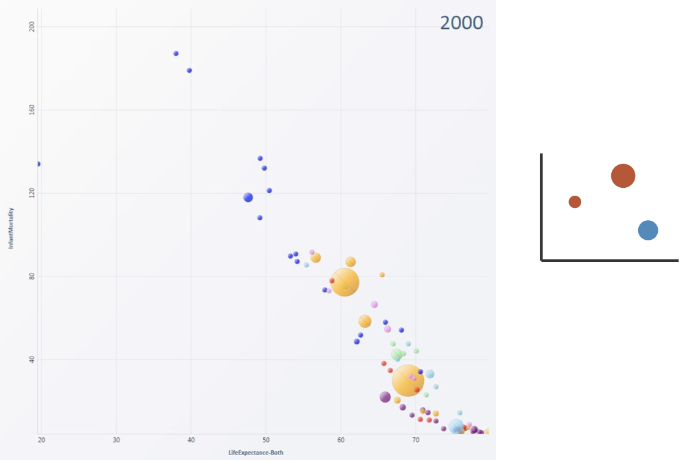
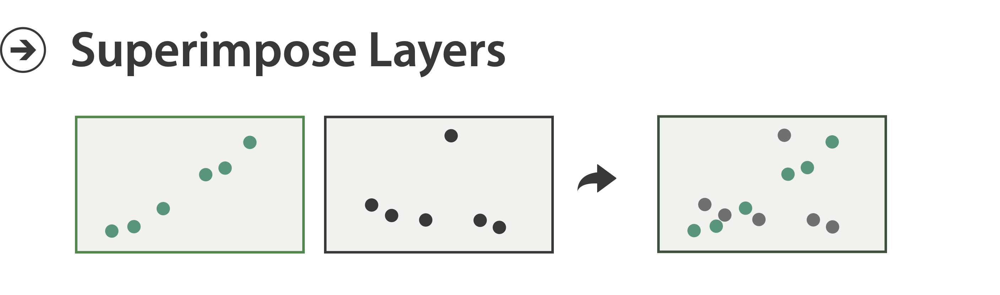
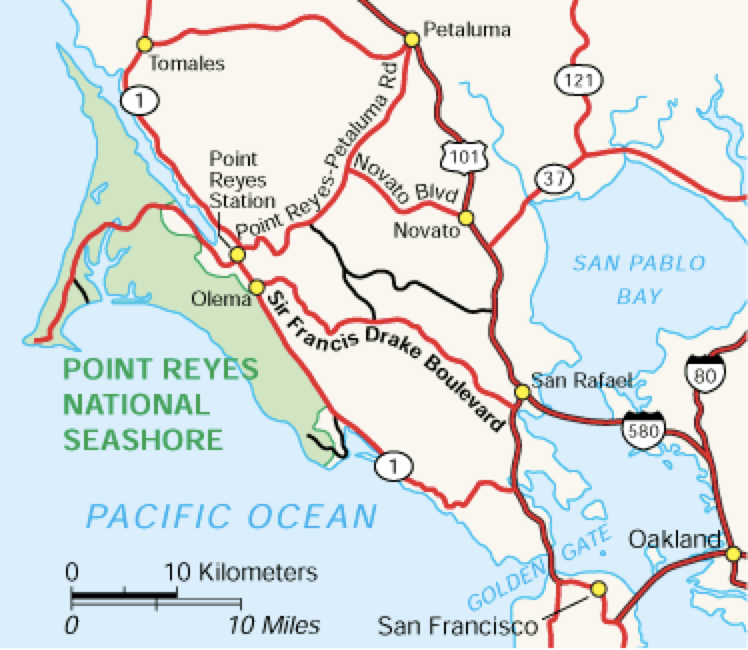
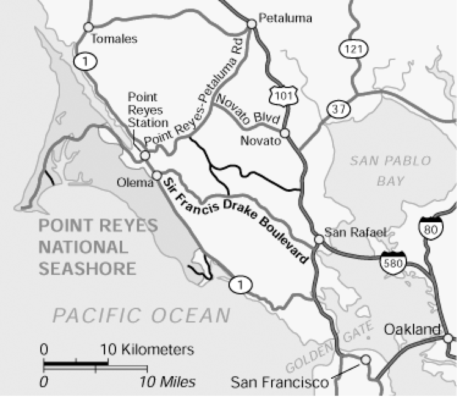
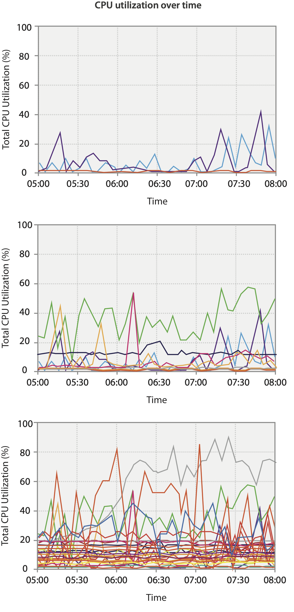

Faceting
MIDS W209: Information Visualization
John Alexis Guerra Gómez | john.guerra[at]gmail.com | @duto_guerra
https://johnguerra.co/lectures/MIDS_W209_Information_Visualization/11_Faceting/
https://johnguerra.co/lectures/MIDS_W209_Information_Visualization/11_Faceting/

Partially based on slides from Tamara Munzner
What we are going to learn
- Faceting
- Juxtapose
- Partition
- Superimpose
- Shared Data
- Shared Encoding
- Shared Navigation
- Dashboarding in a Box
- Architecture for Visualization
Facet Across Multiple Views
Facet
Juxtapose
Juxtapose and Coordinate Views
Coordinate Views:
Design Choice Interaction

Juxtapose
- Design Choices
- View count
- few vs many
- view visibility
- view arrangment
- User managed vs system aligned
- View count
- Why juxtapose views?
- Benefits: eyes vs memory
- Lower cognitive load to move eyes between 2 views than remembering previous state with single changing view
- Costs: display area, 2 views side by side each have only half the area of one view
- Benefits: eyes vs memory
Partition
Partition Into Views
- How to divide data between views
- Split into regions by attributes
- Encodes association between items using spatial proximity
- Order of splits has major implications for what patterns are visible
- No strict dividing line
- View: big/detailed
- Contiguous region in which visually encoded data is shown on the display
- Glyph: small/iconic
- Object with internal structure that arises from multiple marks
- View: big/detailed

Partitioning: List Alignment
- Single bar chart with grouped bars
- Split by state into regions
- Complex glyph within each region showing all ages
- Compare: easy within state, hard across ages
- Small-multiple bar charts
- Split by age into regions
- One chart per region
- Compare: easy within age, harder across states

Partitioning: Recursive Subdivision
System: HIVE
- Split by neighborhood
- Then by type
- Then time
- Years as rows
- Months as columns
- Color by price
- Neighborhood patterns
- Where it’s expensive
- Where you pay much more for detached type
Partitioning: Recursive Subdivision
System: HIVE
- Switch order of splits
- Type then neighborhood
- Switch color
- By price variation
- Type patterns
- Within specific type, which neighborhoods inconsistent
Partitioning: Recursive Subdivision
System: HIVE
- Different encoding for second-level regions
- Choropleth maps
Partitioning: Recursive Subdivision
System: HIVE
- Size regions by sale counts
- Not uniformly
- Result: treemap
Superimpose
Superimpose Layers
- Layer: set of objects spread out over region
- Each set is visually distinguishable group
- Extent: whole view
- Design choices
- How many layers, how to distinguish?
- Encode with different, nonoverlapping channels
- Two layers achieveable, three with careful design
- Small static set, or dynamic from many possible?

Static Visual Layering
- Foreground layer: roads
- Hue, size distinguishing main from minor
- High luminance contrast from background
- Background layer: regions
- Desaturated colors for water, parks, land areas
- User can selectively focus attention
- “Get it right in black and white”
- Check luminance contrast with greyscale view

Suprimposing Limits
- Few layers, but many lines
- Up to a few dozen
- But not hundreds
- Superimpose vs juxtapose: empirical study
- Superimposed for local, multiple for global
- Tasks
- Local: maximum, global: slope, discrimination
- Same screen space for all multiples vs single superimposed


Dynamic Visual Layering
- Interactive based on selection.
- One-hop neighbour highlighting demos: click vs hover (lightweight).
Dynamic layering
https://johnguerra.co/viz/influentials/story/?hashtag=ieeevis2019Dashboarding in a box
Tools of the trade
- Python Dash (from Plotly folks).
- R Shiny.
- Metabase ... sorta.
- Flask + Altair.
- Flask + D3.
Architecture for visualization
Concepts we know and love
- Front end.
- Back end.
- What's missing here?
- Processing engine.
- CDNs.
- Static storage.
Applying the
Visualization Mantra
TreeVersity
How to Scroll
What we learned
- Faceting
- Juxtapose
- Partition
- Superimpose
- Shared Data
- Shared Encoding
- Shared Navigation
- Dashboarding in a Box
- Architecture for Visualization